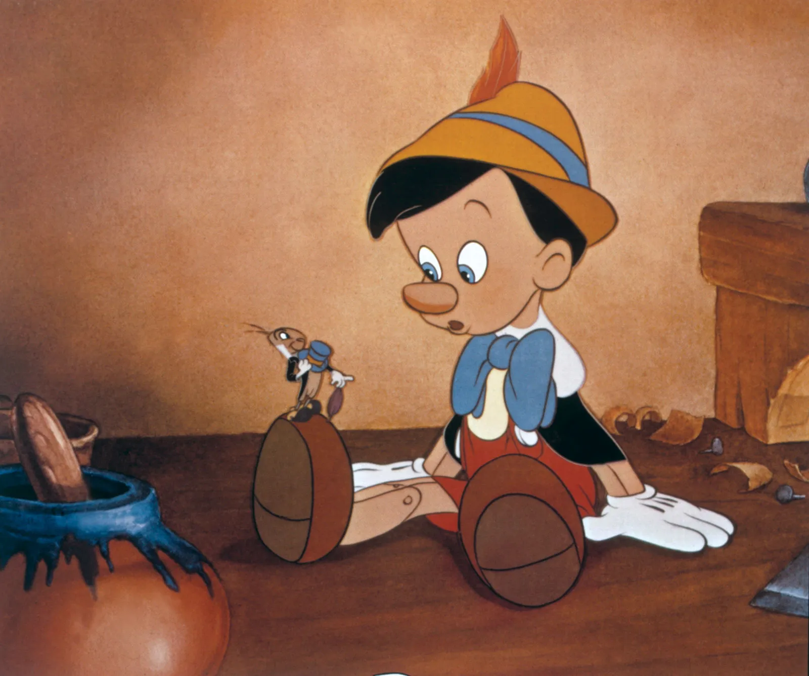

Pinóquio é um boneco de madeira criado por Gepeto, um carpinteiro solitário que sonhava em ter um filho.
Ao terminar de esculpi-lo, uma fada azul dá vida ao boneco e promete que ele poderá se tornar um menino de verdade se provar ser bondoso,corajoso e sincero.
Voltar 